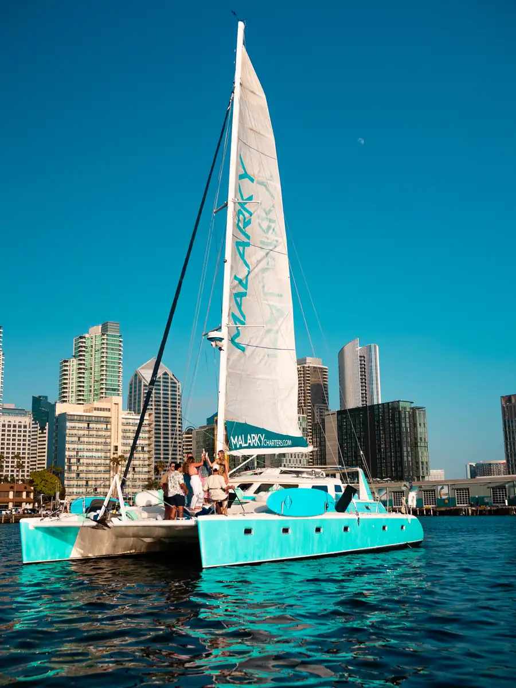

A private 47-foot Voyage sailing catamaran. USCG-certified USCG captain available (separate $50/hr fee, paid directly to captain). Bring your own beverages and food. No shared cruises, no strangers on the deck — just your group, your day, your bay.
Malarky is the most exclusive yacht in the San Diego charter fleet — and that's the point. While the bay's 60-to-100-guest catamarans run shared sunset cruises and big-group events, Malarky stays private. 47 feet of catamaran with 4 staterooms and 2 bathrooms — reserved exclusively for one group of up to twelve, for the duration of your charter.
Every charter includes a U.S. Coast Guard-licensed captain and a friendly crew who handle the boat, the route, and the hospitality. You don't need any sailing experience and you don't need a license. You and your guests step aboard at our Shelter Island dock and the rest of the day unfolds.
This is also the only yacht in the fleet that lets you bring your own drinks and food. Beer, champagne, charcuterie, catering — your choice. Two simple rules: no glass containers (we transfer to plastic before boarding) and no red wine. Beyond that, we hand the day over to you.
Malarky is a Voyage 47 performance catamaran — built in Cape Town, South Africa by one of the more respected catamaran shipwrights in the world. The pedigree shows in the way the boat sits on the water: low-profile twin hulls, ample sail area, a modern interior, almost no roll. Stable, quiet, comfortable on a flat-water bay.
Inside, four staterooms and two heads. A full indoor lounge with comfortable seating, natural light through bay-side windows, a coffee table, and a stocked mini fridge for keeping your drinks and snacks cold. Step aft and you'll find a covered deck with table seating for around eight — the most-used spot for meals and conversation, fully shaded against the San Diego sun.
Forward, the bow trampoline net stretches between the hulls. It's where guests stretch out, watch the bow wake, and — frequently — spot dolphins pacing the boat. Take the 3D walkthrough below to see how the spaces flow before you book.
Every Malarky charter includes a USCG-approved captain and crew — never an add-on, never an upsell. The crew handles everything that touches the boat: navigation, anchoring, line handling, the safety briefing, and any music piped through the onboard sound system.
Charters depart from America's Cup Harbor — our dock is at 2700 Shelter Island Dr, just south of our office and behind Ketch Kitchen and Taps. From the harbor mouth, the bay opens in three directions, and from there your route is whatever you and the captain decide it should be.
Most charters take in the same set of San Diego icons: the Coronado Bridge stretched against the sky, the USS Midway moored at the Embarcadero, the Star of India sailing-ship museum, Seaport Village, the silhouette of Cabrillo National Monument on the western point, and the marinas of Shelter Island and Harbor Island. The captain will suggest a route based on the time of day and the weather. You can request specific spots, an anchor stop for a swim, a lap past a particular landmark for photos, or simply "take us where the light's best."
San Diego Bay is unexpectedly rich for wildlife. Dolphin pods are common, especially near the bow trampoline. Sea lions lounge on the buoys. In winter and early spring, gray whales and the occasional blue whale pass within sight of the bay's mouth, and seals are year-round residents. The captain will point out anything worth seeing as you go.
Charters run within San Diego Bay only — the bay is the experience.
The twelve-guest cap is the ideal size for a micro-wedding ceremony or an elopement on the water. The Coronado Bridge at golden hour is the backdrop. Your crew brings the boat to the moment; you and your photographer take it from there. Plan a small wedding or elopement on the water.
BYOB rules and a private 12-guest setup make Malarky right for a curated bachelorette day — your group only, your music, your champagne. No bar staff hovering, no shared deck, no themed party-boat awkwardness. See the intimate bachelorette charter details.
Twelve close friends, three to four hours on the bay, and the easiest birthday party logistics you'll ever pull off. Bring the cake, the playlist, and the people — we handle the rest. Reserve a private birthday yacht.
A quiet table for two on the aft deck, your favorite bottle, a route past the same skyline you've been watching together for years. Anniversaries are part of why Malarky exists. Plan an anniversary charter on Malarky.
The captain will time the route around golden hour. The crew will quietly make sure the moment lands the way you've planned it. We've helped many couples get the answer right. Talk to us about the proposal yacht we're known for.
For teams of twelve or fewer, Malarky is a serious upgrade on the conference room. Client entertaining, board off-sites, founders-only retreats — quiet enough to talk, scenic enough to remember. Book a small executive yacht charter for your team.
San Diego Bay has a handful of protected spots where the captain will drop anchor for a swim break. That's when the toys come out:
The waterslide is the unique one in the San Diego charter fleet — most boats don't have the bow geometry or the crew to set it up safely. Add-ons are confirmed in advance, so we'll have everything inflated and ready when you anchor. See the full lineup on the boat rental with water toys page.
We work with a roster of San Diego caterers and can arrange anything from a charcuterie spread to a fully plated multi-course meal. Mention catering when you book and we'll send menu and pricing options that match the size of your group, the time of day, and any dietary needs.
Or BYOF — bring your own food. Many guests pick up takeout from a favorite spot in town and keep it simple. The same two beverage rules apply to anything you bring: no glass containers, no red wine. Beer, white wine, champagne, cocktails in cans, and most foods (including hot food in non-glass containers) are all welcome aboard.
Charter pricing is structured around hourly blocks with a two-hour minimum, though three to four hours is what most guests book — enough time to take in the bay, anchor for a swim, eat and drink, and return without rushing.
Pricing varies by season and time of day (sunset slots run higher), and add-ons are itemized so you only pay for what you use. We publish current promotions and seasonal packages — see all pricing details for the full structure, or browse current charter deals and seasonal offers when you're ready to book.
Cancellation: full deposit refund three or more weeks before your charter, free reschedule up to one week before departure, and within one week the deposit becomes non-refundable. The same policy applies year-round. See the full 2026 cancellation policy →
All charters depart from our commercial dock at 2700 Shelter Island Dr, San Diego, CA 92106. Pull in behind Ketch Kitchen and Taps; the office is the building closest to the water and the dock is just south. Parking is free along Shelter Island Drive — plenty of spaces on weekdays, more limited on weekends but never a real problem.
Plan to arrive about 15 minutes before your charter time. The crew will meet you at the dock for a quick safety briefing and to help with whatever you've brought aboard.
Our friends planned a boat day through Malarky Charters and we had such a great time! Captain Galen and First Mate Mitch were awesome and really enhanced the experience. To top it off our friends got engaged while we were anchored near Coronado and it was really special. 10/10 would recommend!
Such a fun crew and trip. We rented the Malarky for 2 hours and had a blast. The crew took such great care of us. We had Charlie and Becca and they could not have been nicer! Sailing around the San Diego bay and viewing skyline is a surreal and priceless experience. Book the trip!
Had a great time on the Malarky. Couldn't have asked for a better captain and crew. They were super chill and approachable. Would recommend to anyone wanting a private charter in SD Bay. Rad way to see the skyline and take in all the beauty that San Diego has to offer. Celebrated my sister's 40th proper.
For more, see our full frequently asked questions.
Twelve guests. USCG captain available ($50/hr add-on, paid directly to captain). BYOB. The bay is yours for an afternoon — pick a date and we'll handle the rest.
Check Availability →Have a question? Call or text us at (844) 724-5787 — we usually respond within an hour during business hours.